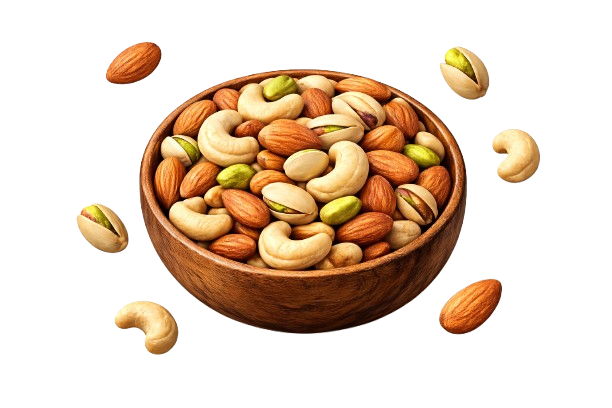

From Our Family to Yours: The Divine Foods Story
Welcome to The Divine Foods. I founded this company on a simple yet powerful belief: that the best foods are grown, not made. This is our story—a journey of passion, purity, and an unwavering commitment to bringing nature’s finest to your table.
1. Responsible Sourcing: Cultivating Relationships
The journey of every Divine nut begins long before it reaches our facility. We don't just "buy" ingredients; we forge lifelong partnerships with growers who treat the land with the same respect we treat our customers. From the sun-drenched almond orchards of California to the nutrient-rich coastal soils of India, we hand-select our partners based on their commitment to sustainable farming, ethical labor, and uncompromising quality. We believe that a superior product starts with healthy soil and a farmer's passion.

2. Quality Inspection: The 12-Point Divine Standard
Upon arrival, every batch is treated like a rare treasure. Our quality assurance team performs a rigorous 12-point inspection that goes far beyond industry standards. We scrutinize every nut for perfect size uniformity, vibrant color, optimal moisture levels, and that signature "snap" texture. If a batch doesn't meet our "Divine" grade, it simply doesn't move forward. This relentless pursuit of perfection is why our customers trust us with their health.

3. Cleaning & Sorting: Precision at Scale
Purity is non-negotiable. Our cleaning process is a blend of high-tech precision and human intuition. We use gentle air-sorting technology to remove even the smallest impurities, followed by a double-pass manual sorting by our experienced team. This multi-layered approach ensures that every single nut in your pack is free from debris, dust, or imperfections—leaving only pure, premium nutrition for you to enjoy.

4. Hygienic Packaging: Sealed in Freshness
The final step in our process is where the magic is preserved. We operate a fully automated, cleanroom packaging environment that rivals pharmaceutical standards. Our small-batch approach means that nuts are roasted and then sealed almost immediately, trapping in the natural oils and that "just-packed" crunch. Our specialized multi-layer packaging protects against light, air, and moisture, ensuring that the Divine experience is identical from the first bite to the last.

5. Final Product Readiness: Your Daily Fuel
The culmination of our journey: a pack of The Divine Foods, ready to fuel your ambitious life. Whether it's your morning energy boost or a healthy evening snack, you're not just eating nuts—you're consuming the result of a meticulous, family-driven process designed to bring you the best the earth has to offer. Fresh, pure, and thoughtfully delivered from our family to yours.
